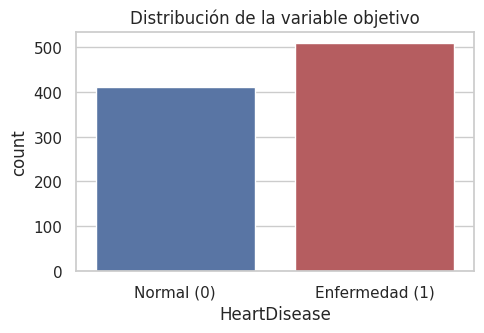
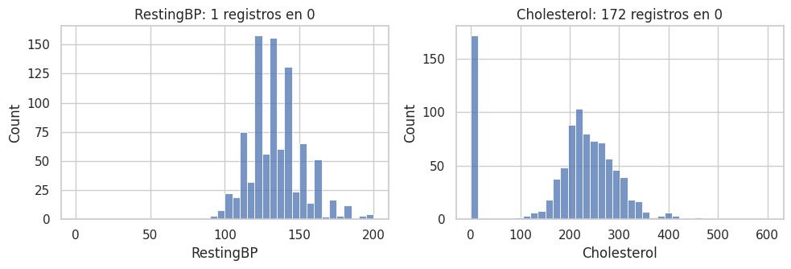
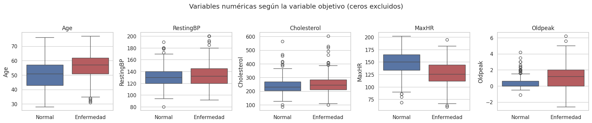
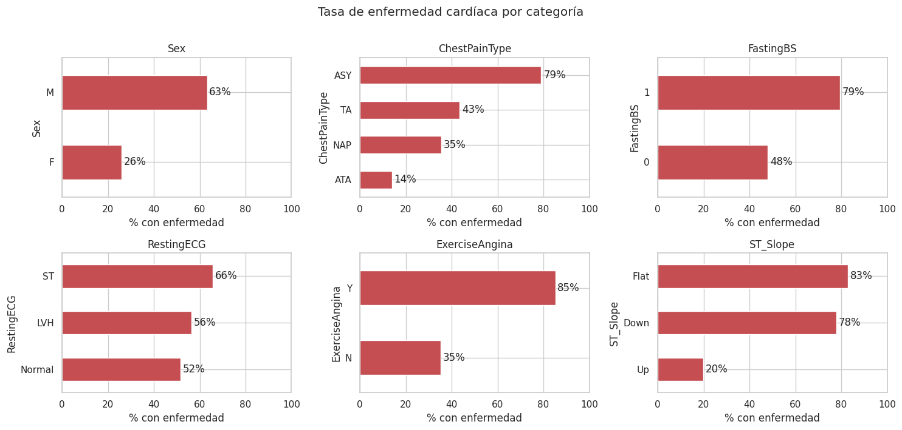
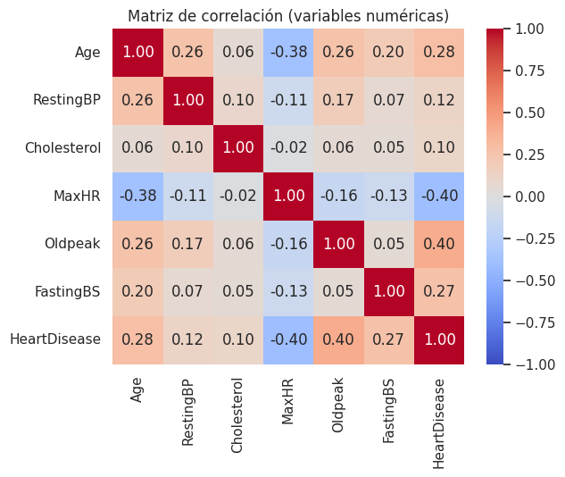
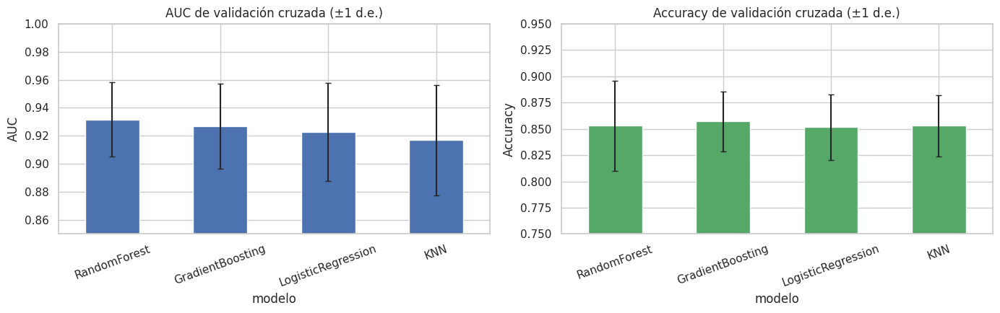

Etapa 1 · Análisis exploratorio, preprocesamiento y detección de data leakage#
Proyecto integrador — Heart Failure Prediction (MLOps local)
Objetivo del cuaderno:
Explorar el dataset Heart Failure Prediction (Kaggle, fedesoriano; 918 pacientes, 11 predictores) y tratar los valores faltantes.
Demostrar empíricamente el efecto de la fuga de datos (data leakage), comparando un flujo incorrecto con uno correcto basado en
Pipeline.Implementar, dentro del flujo sin fuga, cuatro clasificadores (LogisticRegression, RandomForestClassifier, KNeighborsClassifier y GradientBoostingClassifier), cada uno en un
Pipelineoptimizado conGridSearchCV, y presentar un ranking comparativo por AUC y accuracy.
La lógica reutilizable (carga, partición, preprocesamiento, entrenamiento y comparación) se define como funciones en la sección 0 de este cuaderno.
from pathlib import Path
ROOT = Path.cwd().parent if Path.cwd().name == "notebooks" else Path.cwd()
import warnings
import numpy as np
import pandas as pd
import matplotlib.pyplot as plt
import seaborn as sns
from IPython.display import display
from sklearn.model_selection import train_test_split, GridSearchCV
from sklearn.svm import SVC
from sklearn.preprocessing import MinMaxScaler
from sklearn.pipeline import Pipeline
from sklearn.metrics import roc_auc_score, accuracy_score, RocCurveDisplay
warnings.filterwarnings("ignore")
sns.set_theme(style="whitegrid")
pd.set_option("display.max_columns", 50)
0. Funciones reutilizables#
Siguiendo el enunciado, la lógica de carga, partición, preprocesamiento, entrenamiento y comparación se encapsula en funciones. Todo el preprocesamiento (imputación, one-hot y escalado) vive dentro de un Pipeline/ColumnTransformer, de modo que en cada pliegue de la validación cruzada se ajusta únicamente con los datos de entrenamiento de ese pliegue.
# Funciones reutilizables de la Etapa 1 (carga, partición, preprocesamiento, modelos, entrenamiento)
from time import perf_counter
import numpy as np
import pandas as pd
from sklearn.base import clone
from sklearn.compose import ColumnTransformer
from sklearn.ensemble import GradientBoostingClassifier, RandomForestClassifier
from sklearn.impute import SimpleImputer
from sklearn.linear_model import LogisticRegression
from sklearn.metrics import accuracy_score, roc_auc_score
from sklearn.model_selection import GridSearchCV, StratifiedKFold, train_test_split
from sklearn.neighbors import KNeighborsClassifier
from sklearn.pipeline import Pipeline
from sklearn.preprocessing import MinMaxScaler, OneHotEncoder
RANDOM_STATE = 42
TARGET = "HeartDisease"
# En este dataset un 0 en colesterol o presión en reposo no es fisiológicamente
# posible: es un valor faltante codificado como 0. Se imputa dentro del pipeline.
ZERO_AS_MISSING_COLS = ["RestingBP", "Cholesterol"]
NUMERIC_COLS = ["Age", "MaxHR", "Oldpeak"]
CATEGORICAL_COLS = ["Sex", "ChestPainType", "FastingBS", "RestingECG",
"ExerciseAngina", "ST_Slope"]
FEATURES = ["Age", "Sex", "ChestPainType", "RestingBP", "Cholesterol", "FastingBS",
"RestingECG", "MaxHR", "ExerciseAngina", "Oldpeak", "ST_Slope"]
# ---------------------------------------------------------------------------
# Datos
# ---------------------------------------------------------------------------
def load_data(path) -> pd.DataFrame:
"""Carga el CSV de Kaggle (fedesoriano) y valida sus columnas."""
if not Path(path).exists():
raise FileNotFoundError(
"No se encontró heart.csv. Descárgalo de Kaggle (Heart Failure Prediction) "
"y colócalo en la carpeta notebooks/."
)
df = pd.read_csv(path)
missing = set(FEATURES + [TARGET]) - set(df.columns)
if missing:
raise ValueError(f"Faltan columnas en el dataset: {missing}")
return df
def split_data(df: pd.DataFrame, test_size: float = 0.2,
random_state: int = RANDOM_STATE):
"""Separa X/y y hace la partición estratificada ANTES de cualquier ajuste."""
X = df[FEATURES].copy()
y = df[TARGET].copy()
return train_test_split(X, y, test_size=test_size,
random_state=random_state, stratify=y)
# ---------------------------------------------------------------------------
# Preprocesamiento
# ---------------------------------------------------------------------------
def build_preprocessor(scaler=None, scale_numeric: bool = True) -> ColumnTransformer:
"""Construye el preprocesamiento sin aprender información fuera del pipeline.
Los modelos basados en distancias o coeficientes usan escalado. Los árboles
reciben las variables numéricas sin escalar porque no lo necesitan.
"""
scaler = scaler if scaler is not None else MinMaxScaler()
scaler_step = clone(scaler) if scale_numeric else "passthrough"
zero_missing_pipe = Pipeline([
("imputer", SimpleImputer(missing_values=0, strategy="median")),
("scaler", scaler_step),
])
numeric_pipe = Pipeline([
("imputer", SimpleImputer(strategy="median")),
("scaler", clone(scaler) if scale_numeric else "passthrough"),
])
categorical_pipe = Pipeline([
("imputer", SimpleImputer(strategy="most_frequent")),
("onehot", OneHotEncoder(handle_unknown="ignore", drop="if_binary")),
])
return ColumnTransformer([
("num_zero", zero_missing_pipe, ZERO_AS_MISSING_COLS),
("num", numeric_pipe, NUMERIC_COLS),
("cat", categorical_pipe, CATEGORICAL_COLS),
])
# ---------------------------------------------------------------------------
# Modelos y mallas de hiperparámetros
# ---------------------------------------------------------------------------
def get_models():
"""Devuelve (modelo, malla, requiere_escalado) para cada clasificador."""
rs = RANDOM_STATE
return {
"LogisticRegression": (
LogisticRegression(max_iter=2000, random_state=rs),
{"clf__C": [0.01, 0.1, 1, 10]},
True,
),
"KNN": (
KNeighborsClassifier(),
{"clf__n_neighbors": [5, 11, 21, 31], "clf__weights": ["uniform", "distance"]},
True,
),
"RandomForest": (
RandomForestClassifier(random_state=rs),
{"clf__n_estimators": [200, 400], "clf__max_depth": [4, 8, None],
"clf__min_samples_leaf": [1, 5]},
False,
),
"GradientBoosting": (
GradientBoostingClassifier(random_state=rs),
{"clf__n_estimators": [100, 200], "clf__learning_rate": [0.05, 0.1],
"clf__max_depth": [2, 3]},
False,
),
}
def make_cv(n_splits: int = 5) -> StratifiedKFold:
return StratifiedKFold(n_splits=n_splits, shuffle=True, random_state=RANDOM_STATE)
# ---------------------------------------------------------------------------
# Entrenamiento y evaluación
# ---------------------------------------------------------------------------
def train_pipeline(X_train, y_train, model, param_grid, preprocessor=None,
cv=None, scoring="roc_auc", n_jobs=-1,
scale_numeric: bool = True) -> GridSearchCV:
"""Pipeline(preprocesamiento + modelo) optimizado con GridSearchCV."""
pipe = Pipeline([
("preprocess", preprocessor if preprocessor is not None
else build_preprocessor(scale_numeric=scale_numeric)),
("clf", model),
])
refit = "roc_auc" if isinstance(scoring, dict) else True
grid = GridSearchCV(pipe, param_grid, cv=cv or make_cv(), scoring=scoring,
n_jobs=n_jobs, refit=refit)
grid.fit(X_train, y_train)
return grid
def evaluate(model, X, y, threshold: float = 0.5) -> dict:
"""AUC y accuracy de un estimador ya ajustado."""
proba = model.predict_proba(X)[:, 1]
pred = (proba >= threshold).astype(int)
return {"auc": roc_auc_score(y, proba), "accuracy": accuracy_score(y, pred)}
def compare_models(X_train, y_train, models=None):
"""Compara modelos solo con validación cruzada del conjunto de entrenamiento."""
models = models or get_models()
results, grids = [], {}
scoring = {"roc_auc": "roc_auc", "accuracy": "accuracy"}
for name, (model, grid_params, scale_numeric) in models.items():
t0 = perf_counter()
grid = train_pipeline(
X_train,
y_train,
model,
grid_params,
scoring=scoring,
scale_numeric=scale_numeric,
)
elapsed = perf_counter() - t0
best = grid.best_index_
results.append({
"modelo": name,
"auc_cv": grid.best_score_,
"auc_cv_std": grid.cv_results_["std_test_roc_auc"][best],
"accuracy_cv": grid.cv_results_["mean_test_accuracy"][best],
"accuracy_cv_std": grid.cv_results_["std_test_accuracy"][best],
"mejores_parametros": {k.replace("clf__", ""): v
for k, v in grid.best_params_.items()},
"tiempo_s": round(elapsed, 1),
})
grids[name] = grid
ranking = (pd.DataFrame(results)
.sort_values("auc_cv", ascending=False)
.reset_index(drop=True))
ranking.index = np.arange(1, len(ranking) + 1)
ranking.index.name = "ranking"
return ranking, grids
def feature_names(fitted_pipeline):
"""Nombres de las variables tras el ColumnTransformer."""
return list(fitted_pipeline.named_steps["preprocess"].get_feature_names_out())
1. Carga y descripción del dataset#
df = load_data(ROOT / "notebooks" / "heart.csv")
print("Dimensiones:", df.shape)
df.head()
Dimensiones: (918, 12)
| Age | Sex | ChestPainType | RestingBP | Cholesterol | FastingBS | RestingECG | MaxHR | ExerciseAngina | Oldpeak | ST_Slope | HeartDisease | |
|---|---|---|---|---|---|---|---|---|---|---|---|---|
| 0 | 40 | M | ATA | 140 | 289 | 0 | Normal | 172 | N | 0.0 | Up | 0 |
| 1 | 49 | F | NAP | 160 | 180 | 0 | Normal | 156 | N | 1.0 | Flat | 1 |
| 2 | 37 | M | ATA | 130 | 283 | 0 | ST | 98 | N | 0.0 | Up | 0 |
| 3 | 48 | F | ASY | 138 | 214 | 0 | Normal | 108 | Y | 1.5 | Flat | 1 |
| 4 | 54 | M | NAP | 150 | 195 | 0 | Normal | 122 | N | 0.0 | Up | 0 |
Variable |
Descripción |
Tipo |
|---|---|---|
|
Edad del paciente (años) |
Numérica |
|
Sexo (M / F) |
Categórica |
|
Tipo de dolor torácico: TA (angina típica), ATA (atípica), NAP (no anginoso), ASY (asintomático) |
Categórica |
|
Presión arterial en reposo (mm Hg) |
Numérica |
|
Colesterol sérico (mg/dl) |
Numérica |
|
Glucosa en ayunas > 120 mg/dl (1) o no (0) |
Binaria |
|
Electrocardiograma en reposo: Normal, ST, LVH |
Categórica |
|
Frecuencia cardíaca máxima alcanzada |
Numérica |
|
Angina inducida por ejercicio (Y / N) |
Categórica |
|
Depresión del segmento ST |
Numérica |
|
Pendiente del segmento ST en ejercicio: Up, Flat, Down |
Categórica |
|
Variable objetivo: 1 = enfermedad cardíaca, 0 = normal |
Binaria |
df.info()
<class 'pandas.core.frame.DataFrame'>
RangeIndex: 918 entries, 0 to 917
Data columns (total 12 columns):
# Column Non-Null Count Dtype
--- ------ -------------- -----
0 Age 918 non-null int64
1 Sex 918 non-null object
2 ChestPainType 918 non-null object
3 RestingBP 918 non-null int64
4 Cholesterol 918 non-null int64
5 FastingBS 918 non-null int64
6 RestingECG 918 non-null object
7 MaxHR 918 non-null int64
8 ExerciseAngina 918 non-null object
9 Oldpeak 918 non-null float64
10 ST_Slope 918 non-null object
11 HeartDisease 918 non-null int64
dtypes: float64(1), int64(6), object(5)
memory usage: 86.2+ KB
df.describe().T.style.format("{:.2f}").set_caption("Estadísticos descriptivos de las variables numéricas")
| count | mean | std | min | 25% | 50% | 75% | max | |
|---|---|---|---|---|---|---|---|---|
| Age | 918.00 | 53.51 | 9.43 | 28.00 | 47.00 | 54.00 | 60.00 | 77.00 |
| RestingBP | 918.00 | 132.40 | 18.51 | 0.00 | 120.00 | 130.00 | 140.00 | 200.00 |
| Cholesterol | 918.00 | 198.80 | 109.38 | 0.00 | 173.25 | 223.00 | 267.00 | 603.00 |
| FastingBS | 918.00 | 0.23 | 0.42 | 0.00 | 0.00 | 0.00 | 0.00 | 1.00 |
| MaxHR | 918.00 | 136.81 | 25.46 | 60.00 | 120.00 | 138.00 | 156.00 | 202.00 |
| Oldpeak | 918.00 | 0.89 | 1.07 | -2.60 | 0.00 | 0.60 | 1.50 | 6.20 |
| HeartDisease | 918.00 | 0.55 | 0.50 | 0.00 | 0.00 | 1.00 | 1.00 | 1.00 |
dist = df[TARGET].value_counts().rename({0: "Normal (0)", 1: "Enfermedad (1)"}).to_frame("n")
dist["%"] = (dist["n"] / len(df) * 100).round(1)
display(dist)
fig, ax = plt.subplots(figsize=(5, 3.5))
sns.countplot(x=TARGET, data=df, ax=ax, palette=["#4C72B0", "#C44E52"])
ax.set_xticklabels(["Normal (0)", "Enfermedad (1)"])
ax.set_title("Distribución de la variable objetivo")
plt.tight_layout(); plt.show()
| n | % | |
|---|---|---|
| HeartDisease | ||
| Enfermedad (1) | 508 | 55.3 |
| Normal (0) | 410 | 44.7 |

La clase positiva representa ~55 % de los pacientes: el desbalance es leve, por lo que no se requiere remuestreo. Aun así, toda partición se hace estratificada (stratify=y y StratifiedKFold) para conservar la proporción de clases.
2. Valores faltantes (explícitos y ocultos)#
faltantes = pd.DataFrame({
"NaN explícitos": df.isna().sum(),
"Ceros": (df[FEATURES] == 0).sum(),
})
faltantes["% ceros"] = (faltantes["Ceros"] / len(df) * 100).round(1)
faltantes.style.bar(subset=["% ceros"], color="#c0392b", vmin=0, vmax=100) \
.set_caption("Valores faltantes y ceros por variable")
| NaN explícitos | Ceros | % ceros | |
|---|---|---|---|
| Age | 0 | 0.000000 | 0.000000 |
| ChestPainType | 0 | 0.000000 | 0.000000 |
| Cholesterol | 0 | 172.000000 | 18.700000 |
| ExerciseAngina | 0 | 0.000000 | 0.000000 |
| FastingBS | 0 | 704.000000 | 76.700000 |
| HeartDisease | 0 | nan | nan |
| MaxHR | 0 | 0.000000 | 0.000000 |
| Oldpeak | 0 | 368.000000 | 40.100000 |
| RestingBP | 0 | 1.000000 | 0.100000 |
| RestingECG | 0 | 0.000000 | 0.000000 |
| ST_Slope | 0 | 0.000000 | 0.000000 |
| Sex | 0 | 0.000000 | 0.000000 |
El dataset no tiene NaN explícitos, pero sí faltantes ocultos: un colesterol sérico de 0 mg/dl o una presión en reposo de 0 mm Hg no son fisiológicamente posibles, así que esos ceros son datos no registrados. En cambio, los ceros de Oldpeak (sin depresión del ST) y de FastingBS (glucosa normal) sí son valores válidos.
fig, axes = plt.subplots(1, 2, figsize=(10, 3.5))
for ax, col in zip(axes, ZERO_AS_MISSING_COLS):
sns.histplot(df[col], bins=40, ax=ax, color="#4C72B0")
ax.set_title(f"{col}: {(df[col] == 0).sum()} registros en 0")
plt.tight_layout(); plt.show()
print("Tasa de enfermedad cuando Cholesterol == 0:", round(df.loc[df.Cholesterol == 0, TARGET].mean(), 3))
print("Tasa de enfermedad cuando Cholesterol > 0:", round(df.loc[df.Cholesterol > 0, TARGET].mean(), 3))

Tasa de enfermedad cuando Cholesterol == 0: 0.884
Tasa de enfermedad cuando Cholesterol > 0: 0.477
Decisión de tratamiento. No se eliminan filas (se perdería ~19 % de la muestra) ni se imputa antes de la partición, porque la mediana calculada sobre todo el dataset contaminaría el conjunto de prueba. Los ceros de RestingBP y Cholesterol se imputan dentro del pipeline con SimpleImputer(missing_values=0, strategy="median"), que aprende la mediana solo con los datos de entrenamiento de cada pliegue. Así el mismo tratamiento se aplica automáticamente a los datos que lleguen a la API en producción.
Observación: los pacientes con colesterol en 0 tienen una tasa de enfermedad mucho mayor; el faltante no es aleatorio (probablemente proviene de una de las cinco bases de origen). Es un hallazgo que conviene reportar, aunque no se modele explícitamente.
3. Análisis exploratorio#
num_cols = ["Age", "RestingBP", "Cholesterol", "MaxHR", "Oldpeak"]
fig, axes = plt.subplots(1, 5, figsize=(18, 3.6))
plot_df = df.copy()
plot_df[ZERO_AS_MISSING_COLS] = plot_df[ZERO_AS_MISSING_COLS].replace(0, np.nan)
for ax, col in zip(axes, num_cols):
sns.boxplot(x=TARGET, y=col, data=plot_df, ax=ax, palette=["#4C72B0", "#C44E52"])
ax.set_xticklabels(["Normal", "Enfermedad"]); ax.set_xlabel("")
ax.set_title(col)
plt.suptitle("Variables numéricas según la variable objetivo (ceros excluidos)", y=1.03)
plt.tight_layout(); plt.show()

fig, axes = plt.subplots(2, 3, figsize=(15, 7))
for ax, col in zip(axes.ravel(), CATEGORICAL_COLS):
tasa = df.groupby(col)[TARGET].mean().sort_values() * 100
tasa.plot.barh(ax=ax, color="#C44E52")
ax.set_xlim(0, 100); ax.set_xlabel("% con enfermedad"); ax.set_title(col)
for i, v in enumerate(tasa):
ax.text(v + 1, i, f"{v:.0f}%", va="center")
plt.suptitle("Tasa de enfermedad cardíaca por categoría", y=1.01)
plt.tight_layout(); plt.show()

corr = plot_df[num_cols + ["FastingBS", TARGET]].corr()
plt.figure(figsize=(6.5, 5.5))
sns.heatmap(corr, annot=True, fmt=".2f", cmap="coolwarm", vmin=-1, vmax=1)
plt.title("Matriz de correlación (variables numéricas)")
plt.tight_layout(); plt.show()

Síntesis del EDA
ST_Slope(Flat/Down),ChestPainType = ASYyExerciseAngina = Ymuestran tasas de enfermedad muy altas: serán predictores fuertes.OldpeakyAgeaumentan con la enfermedad yMaxHRdisminuye, coherente con la fisiología del esfuerzo.No hay colinealidad fuerte entre numéricas (|r| < 0.4), así que no hace falta eliminar variables.
Las escalas son muy distintas (p. ej.
CholesterolvsOldpeak), por lo que KNN y la regresión logística usan escalado. Random Forest y Gradient Boosting conservan las magnitudes originales porque los árboles no necesitan escalar.
Preprocesamiento adoptado (todo dentro de un ColumnTransformer):
Grupo |
Variables |
Transformación |
|---|---|---|
Numéricas con ceros inválidos |
|
|
Numéricas |
|
|
Categóricas |
|
|
Se usa OneHotEncoder en lugar de pd.get_dummies() porque recuerda las categorías aprendidas en el entrenamiento y tolera categorías nuevas en producción.
4. Demostración de data leakage#
Se reproduce el experimento propuesto en el enunciado: se agrega una variable artificial leaky_feature = y + ruido, que contiene la respuesta, y se escala todo el dataset antes de partir. Como este dataset tiene variables categóricas, el flujo «con fuga» las codifica con pd.get_dummies() también sobre el dataset completo.
4.1 Código original y por qué el supuesto flujo «sin fuga» sigue siendo incorrecto#
Se ejecuta el flujo del enunciado con solo dos adaptaciones obligatorias para este dataset: la columna objetivo se llama HeartDisease (no target) y las variables categóricas se codifican con pd.get_dummies, porque MinMaxScaler y SVC no aceptan texto. El segundo resultado no se interpreta como un escenario válido: X todavía contiene leaky_feature.
import pandas as pd
import numpy as np
from sklearn.model_selection import train_test_split, GridSearchCV
from sklearn.svm import SVC
from sklearn.preprocessing import MinMaxScaler
from sklearn.pipeline import Pipeline
from sklearn.metrics import roc_auc_score
# Cargar datos
df = pd.read_csv(ROOT / "notebooks" / "heart.csv")
X = pd.get_dummies(df.drop("HeartDisease", axis=1), drop_first=True, dtype=float)
y = df["HeartDisease"]
# Variable artificial que introduce fuga de objetivo
np.random.seed(0)
X["leaky_feature"] = y + np.random.normal(0, 0.01, size=len(y))
# Fuga de objetivo + preprocesamiento ajustado antes de partir
scaler = MinMaxScaler()
X_scaled = scaler.fit_transform(X)
X_train_l, X_test_l, y_train_l, y_test_l = train_test_split(
X_scaled, y, test_size=0.2, random_state=42, stratify=y)
grid_l = GridSearchCV(SVC(probability=True),
param_grid={"C": [0.1, 1, 10], "gamma": [0.01, 0.1]},
cv=5, scoring="roc_auc")
grid_l.fit(X_train_l, y_train_l)
auc_l = roc_auc_score(y_test_l, grid_l.predict_proba(X_test_l)[:, 1])
# El Pipeline arregla el orden del escalado, pero NO elimina leaky_feature
X_train, X_test, y_train, y_test = train_test_split(
X, y, test_size=0.2, random_state=42, stratify=y)
pipe = Pipeline([("scaler", MinMaxScaler()), ("svc", SVC(probability=True))])
param_grid = {"svc__C": [0.1, 1, 10], "svc__gamma": [0.01, 0.1]}
grid = GridSearchCV(pipe, param_grid, cv=5, scoring="roc_auc")
grid.fit(X_train, y_train)
auc_pipeline_con_fuga = roc_auc_score(y_test, grid.predict_proba(X_test)[:, 1])
print(f"AUC con fuga de objetivo y preprocesamiento anticipado: {auc_l:.3f}")
print("AUC del supuesto flujo 'sin fuga' (todavía contiene leaky_feature): "
f"{auc_pipeline_con_fuga:.3f}")
AUC con fuga de objetivo y preprocesamiento anticipado: 1.000
AUC del supuesto flujo 'sin fuga' (todavía contiene leaky_feature): 1.000
El «flujo correcto» de la plantilla también da un AUC cercano a 1 porque X todavía contiene leaky_feature: el Pipeline corrige la fuga de preprocesamiento (el escalado), pero no la fuga de objetivo. Para separar los dos efectos se repite el experimento en cuatro escenarios.
4.2 Separación de los dos tipos de fuga#
X_full = df[FEATURES].copy()
y_full = df[TARGET].copy()
np.random.seed(0)
leaky = y_full + np.random.normal(0, 0.01, size=len(y_full))
param_grid_svc = {"C": [0.1, 1, 10], "gamma": [0.01, 0.1]}
cv = make_cv()
def svc_grid_sin_pipeline(X_proc, y):
"""Preprocesamiento ya aplicado a TODO el dataset → split → GridSearch."""
X_tr, X_te, y_tr, y_te = train_test_split(X_proc, y, test_size=0.2,
random_state=RANDOM_STATE, stratify=y)
g = GridSearchCV(SVC(probability=True, random_state=RANDOM_STATE), param_grid_svc,
cv=cv, scoring="roc_auc")
g.fit(X_tr, y_tr)
return g.best_score_, roc_auc_score(y_te, g.predict_proba(X_te)[:, 1])
def svc_grid_con_pipeline(X, y):
"""Split primero → Pipeline (preprocesamiento + SVC) dentro de GridSearch."""
X_tr, X_te, y_tr, y_te = train_test_split(X, y, test_size=0.2,
random_state=RANDOM_STATE, stratify=y)
extra = [c for c in X.columns if c not in FEATURES]
pre = build_preprocessor()
if extra: # la variable con fuga se escala y entra al modelo
pre.transformers.append(("leak", MinMaxScaler(), extra))
pipe = Pipeline([("preprocess", pre), ("svc", SVC(probability=True, random_state=RANDOM_STATE))])
g = GridSearchCV(pipe, {f"svc__{k}": v for k, v in param_grid_svc.items()},
cv=cv, scoring="roc_auc")
g.fit(X_tr, y_tr)
return g.best_score_, roc_auc_score(y_te, g.predict_proba(X_te)[:, 1])
def preprocesar_todo(X):
"""Flujo INCORRECTO: imputación, dummies y escalado con estadísticos de todo el dataset."""
X = X.copy()
for c in ZERO_AS_MISSING_COLS:
X[c] = X[c].replace(0, X.loc[X[c] > 0, c].median())
X = pd.get_dummies(X, columns=CATEGORICAL_COLS, drop_first=True, dtype=float)
return MinMaxScaler().fit_transform(X)
escenarios = {}
# A) Enunciado: variable con fuga + preprocesamiento antes del split
X_a = X_full.assign(leaky_feature=leaky)
escenarios["A. Fuga de objetivo + preprocesamiento antes del split"] = svc_grid_sin_pipeline(preprocesar_todo(X_a), y_full)
# B) Fuga de objetivo, aunque el preprocesamiento esté en un Pipeline
escenarios["B. Fuga de objetivo con Pipeline"] = svc_grid_con_pipeline(X_a, y_full)
# C) Sin variable con fuga, pero preprocesamiento antes del split
escenarios["C. Solo fuga de preprocesamiento"] = svc_grid_sin_pipeline(preprocesar_todo(X_full), y_full)
# D) Flujo correcto: sin variable con fuga, split primero, todo en Pipeline
escenarios["D. Flujo correcto (sin fuga)"] = svc_grid_con_pipeline(X_full, y_full)
tabla_fuga = pd.DataFrame(escenarios, index=["AUC validación cruzada", "AUC prueba"]).T
tabla_fuga.style.format("{:.3f}").background_gradient(cmap="Reds", vmin=0.85, vmax=1) \
.set_caption("Efecto de la fuga de datos sobre el AUC de un SVC")
| AUC validación cruzada | AUC prueba | |
|---|---|---|
| A. Fuga de objetivo + preprocesamiento antes del split | 1.000 | 1.000 |
| B. Fuga de objetivo con Pipeline | 1.000 | 1.000 |
| C. Solo fuga de preprocesamiento | 0.916 | 0.930 |
| D. Flujo correcto (sin fuga) | 0.919 | 0.918 |
Interpretación
A y B: con la variable que contiene la respuesta el AUC llega prácticamente a 1, con o sin
Pipeline. El pipeline no corrige la fuga de objetivo; esa se evita revisando qué variables estarían realmente disponibles al momento de predecir (aquí, ninguna variable posterior al diagnóstico).C vs D: con escalado, imputación y codificación sobre todo el dataset, la diferencia frente al flujo correcto es pequeña en este caso, porque
MinMaxScalery la mediana cambian poco entre particiones. Pero el procedimiento sigue siendo inválido: la estimación deja de ser honesta y, con transformaciones que usan la respuesta o con selección de variables, la distorsión puede ser grande.D es el valor que debe reportarse: partición primero y todo el preprocesamiento dentro del
Pipeline, reajustado en cada pliegue.
5. Comparación de modelos en el flujo sin fuga#
Cada modelo se encapsula en Pipeline([("preprocess", ColumnTransformer), ("clf", modelo)]) y se optimiza con GridSearchCV y StratifiedKFold de 5 pliegues. La búsqueda calcula AUC y Accuracy, pero usa refit="roc_auc": el ganador se elige exclusivamente por AUC de validación cruzada sobre entrenamiento.
El conjunto Test queda reservado y no se evalúa aquí; se utiliza una sola vez en la Etapa 2, después de seleccionar el ganador. La regresión logística y KNN usan MinMaxScaler; Random Forest y Gradient Boosting no escalan las numéricas.
X_train, X_test, y_train, y_test = split_data(df)
print("Entrenamiento:", X_train.shape, "| Prueba:", X_test.shape)
print(f"Proporción de positivos — train: {y_train.mean():.3f} | test: {y_test.mean():.3f}")
Entrenamiento: (734, 11) | Prueba: (184, 11)
Proporción de positivos — train: 0.553 | test: 0.554
ranking, grids = compare_models(X_train, y_train)
(ranking.drop(columns=["mejores_parametros"])
.style.format({"auc_cv": "{:.4f}", "auc_cv_std": "{:.4f}",
"accuracy_cv": "{:.4f}", "accuracy_cv_std": "{:.4f}",
"tiempo_s": "{:.1f}"})
.background_gradient(subset=["auc_cv", "accuracy_cv"], cmap="Greens")
.set_caption("Ranking de modelos: solo validación cruzada del conjunto de entrenamiento"))
| modelo | auc_cv | auc_cv_std | accuracy_cv | accuracy_cv_std | tiempo_s | |
|---|---|---|---|---|---|---|
| ranking | ||||||
| 1 | RandomForest | 0.9316 | 0.0264 | 0.8529 | 0.0431 | 29.3 |
| 2 | GradientBoosting | 0.9269 | 0.0305 | 0.8570 | 0.0285 | 10.0 |
| 3 | LogisticRegression | 0.9227 | 0.0350 | 0.8515 | 0.0311 | 1.0 |
| 4 | KNN | 0.9169 | 0.0393 | 0.8529 | 0.0293 | 1.7 |
pd.DataFrame({"modelo": ranking["modelo"], "mejores hiperparámetros": ranking["mejores_parametros"].astype(str)})
| modelo | mejores hiperparámetros | |
|---|---|---|
| ranking | ||
| 1 | RandomForest | {'max_depth': 8, 'min_samples_leaf': 5, 'n_est... |
| 2 | GradientBoosting | {'learning_rate': 0.05, 'max_depth': 2, 'n_est... |
| 3 | LogisticRegression | {'C': 1} |
| 4 | KNN | {'n_neighbors': 31, 'weights': 'distance'} |
fig, axes = plt.subplots(1, 2, figsize=(14, 4.5))
r = ranking.set_index("modelo")
r["auc_cv"].plot.bar(ax=axes[0], yerr=r["auc_cv_std"], capsize=3,
color="#4C72B0", rot=20)
axes[0].set_ylim(0.85, 1.0)
axes[0].set_title("AUC de validación cruzada (±1 d.e.)")
axes[0].set_ylabel("AUC")
r["accuracy_cv"].plot.bar(ax=axes[1], yerr=r["accuracy_cv_std"], capsize=3,
color="#55A868", rot=20)
axes[1].set_ylim(0.75, 0.95)
axes[1].set_title("Accuracy de validación cruzada (±1 d.e.)")
axes[1].set_ylabel("Accuracy")
plt.tight_layout(); plt.show()

mejor = ranking.iloc[0]
print(f"Modelo ganador por validación cruzada: {mejor['modelo']}")
print(f" AUC CV = {mejor['auc_cv']:.4f} ± {mejor['auc_cv_std']:.4f}")
print(f" Accuracy CV = {mejor['accuracy_cv']:.4f} ± {mejor['accuracy_cv_std']:.4f}")
print(f"Mejores hiperparámetros: {mejor['mejores_parametros']}")
print()
print(f"Diferencia entre el 1.º y el 4.º en AUC CV: "
f"{ranking['auc_cv'].max() - ranking['auc_cv'].min():.4f}")
Modelo ganador por validación cruzada: RandomForest
AUC CV = 0.9316 ± 0.0264
Accuracy CV = 0.8529 ± 0.0431
Mejores hiperparámetros: {'max_depth': 8, 'min_samples_leaf': 5, 'n_estimators': 200}
Diferencia entre el 1.º y el 4.º en AUC CV: 0.0147
6. Conclusiones de la Etapa 1#
Los cuatro modelos alcanzan AUC de validación cruzada entre ~0.92 y ~0.93. Las diferencias entre ellos son del mismo orden que la desviación estándar entre pliegues, así que en la práctica tienen un desempeño equivalente; el ranking debe leerse con esa cautela (como advierte el curso en la sección 10.9).
El modelo con mayor AUC de validación cruzada se lleva a la Etapa 2 para su evaluación detallada, verificación de sobreajuste y exportación.
El experimento de fuga muestra que un AUC cercano a 1 en un problema clínico como este es una señal de alarma, no un logro: lo primero es revisar si alguna variable contiene la respuesta y si el preprocesamiento se ajustó antes de partir los datos.
Como referencia, el SVC del flujo correcto de la sección 4 (escenario D) obtuvo un AUC de prueba de 0.918, frente a 0.925 del Random Forest ganador en la Etapa 2: el SVC queda al mismo nivel que los modelos del ranking.